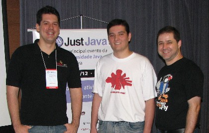

For Users by Users: NetBeans 5.5 in Brazilian Portuguese
To borrow a line from an old African proverb: It takes a community—of
NetBeans users—to spear-head a successful translation project.
As Brazilian developers start to work within the newly released
Brazilian Portuguese version of the NetBeans 5.5 IDE, many may be
surprised to learn that the version of the IDE in their native language
was made possible thanks to a handful of users like them.
The recent release of the NetBeans 5.5 IDE in Brazilian Portuguese is a
testament to the efforts of NetBeans community members and Java
developers in Brazil who collaborated
through the NetBeans Translation Project to help localize the IDE for
their fellow Brazilian developers.
Attracting a wider, more diverse
audience of users has always been a core goal of NetBeans. But even as
the NetBeans IDE and Platform continue to rapidly gather fans worldwide the
daunting challenge of localizing the IDE for legions of non-English
speaking users remains a constant. The NetBeans Translation Project is
an attempt to handle the challenge of localization by relying on the
very same community of users it proposes to help. The project provides
guidance and support for users to create versions of the NetBeans IDE and
Platform, and Netbeans.org web pages in their native languages.
According to NetBeans' new
Community Manager
Bruno Souza, the project is essential
to the growth of NetBeans.
"NetBeans has such a large and diverse community that the only way our products
can evolve to meet the requirements of all is if the community gets involved.
The Translation Projects is an examples of this: the community taking on the
task of adapting NetBeans to suit their own realities and requirements."
When the localization project for Brazilian Portuguese was announced
(initially for NetBeans 5.0) the community’s response and the
coordination efforts were unparalleled. A team of 12 developers led by
Michel Graciano, a Java programmer and active NetBeans user, joined
forces to deliver a Brazilian Portuguese version that would launch in time with
two other multilingual projects for Japanese and Simplified Chinese.
As the Brazilian Portuguese project morphed to keep up with NetBeans
IDE’s upgrade to 5.5, members of SouJava, Brazil's largest Java User Group,
were instrumental in publicizing the translation project, and also providing
support and feedback. Bruno Souza, who introduced several developers to the project,
also served as consultant and cheerleader for the active members
working tirelessly on the translations.
For Graciano and his team, which included Leonardo Galvão, the
Editor-in-chief of both NetBeans Magazine
and
Java Magazine Brazil, the main
challenge, not surprisingly, was coordinating a scattered team of
volunteers with already demanding professional lives. The group
communicated primarily through email and Wiki pages that Graciano
created to track the team’s work and progress. Other pages offered
instructions on issues such as using the translation tools, filing
bugs, clarifying terminology and grammar, and more.
Although the work
was often challenging and the volunteers worked on their time, most
would agree with team member Henrique Meira, one of the top-three contributors,
who said the payoff was the
satisfaction that came from participating in the translation project.
Souza hopes the work done by the Brazilian team will encourage other
community members to start similar translation projects.
"The [Brazilian] group did a great job of organizing and streamlining their work.
And along the way they established relationships with people at Sun and NetBeans.
These are useful steps for other initiatives."
Thanks to the invaluable work of the Brazilian team, Brazilian
developers working with the NetBeans 5.5 IDE are unlikely to find
themselves lost in translation.
There is still time for more NetBeans users to take part in the
translation project for the Brazilian Portuguese version—by signing up for the testing phase.
The deadline has been extended to January 31, 2007, and participants will
have a chance to win an iPod.
Sign up now.
Meet team leader Michel Graciano and team member Henrique
Meira
Michel Graciano
Can you tell us a bit about yourself?
Currently, I am a Java desktop developer, working mainly with Swing and
NetBeans. I’ve been a NetBeans user for about four years; a Java
programmer for about five.
How did you hear about the localization project?
I subscribe to a number of important NetBeans mailing lists. I saw some discussion about
the translation project, and decided to join the team when it was focused on 5.0.
The translation project was a chance to work more closely with the
NetBeans development team—to reduce the distance between users and the
people who create the product.

From left to right: Leonardo Galvão,
Michel Graciano, Bruno Souza
What were your biggest challenges as the project coordinator?
There were several key challenges: consistency of the translation
style and terminology across many contributors; keeping the team
motivated and active; coordinating the translation reviews and commits.
To handle these, we used the
NetBeans Wiki pages
to document team activities, processes, and
best practices. Additionally, we archived the translation memory
files for re-use on the Wiki. We also used our own language-specific
mailing list for team communication.
Maintaining good translation quality was the main
concern for the leads because we had a heterogeneous team of
experienced and new translators and reviewers. So we assigned the
experienced translators to do reviews and had newcomers work on
translations. This approach worked quite well and
we were able to achieve our goal. The secret was not to be too autocratic, because
the team was doing the work voluntarily. But it was fun. Omega-T
, the translation memory editor, was a good tool for re-using translations from 5.0 and across the various 5.5 modules.
Why is it important to localize NetBeans into Portuguese?
In my humble opinion, localizing NetBeans minimizes problems for new
Java programmers who are Brazilian. Since many don't know English or are not yet experienced Java programmers,
reducing or eliminating the language
problem will make new users feel a better sense of accomplishment. Our main targets were
universities and education programs that offer Java classes. Another key point is
that the Brazilian government needs software in our
native language. If this application is not translated the government will not adopt
it as a development tool. Additionally, an initiative like this compels the
community, for example, the Brazilian NetBeans community, to become
more powerful.
Your team’s work is a translation project success story; what
advice
would you give to others interested in starting something
similar?
It is important to be well-organized and to have well-defined processes
and roles for all contributors.
Why? Because it is important for each contributor to see himself/herself as
an integral part of the project. When all the parts work well together, work
progresses. Otherwise, when someone has a problem, all processes are affected.
So, organize the roles, define goals, and set deadlines. And of
course, it is hard work, but the reward comes from seeing it done!
Henrique Meira
What was your introduction to NetBeans?
I have studied and worked with Java since 2000. Some time later, I
started web development and discovered NetBeans 3.4. It's been my work
environment ever since. I love it!
What attracted you to the localization project?
I have professional reasons. Currently, I am working (parallel with
Data Integration Tool) on standalone tributary software to be built on
top of NetBeans, and one of the priorities is that it must be in
Portuguese.
Can you tell us about your experience on the project?
I worked mostly on translations and revisions to the builds. I started off
choosing main modules, then later larger ones, that needed to be
translated. I wasn’t particularly interested in accumulating points for
the contest because we did not have a lot of translators and I was
worried about us meeting the deadline. I moved on to build revisions
when more people began to join the group and I felt that I needed to
leave some modules for others to work on. When I completed some build
revisions, I returned to help with completing the translations, again
because of our deadline. We finished the project, so it worked out
well.
Was it a difficult transition moving from NetBeans 5.0 to 5.5?
There were no problems; though initially I was a bit apprehensive
because I wasn’t sure if all the translation done for 5.0 could be used
for 5.5. But Michel did a great job of merging the two versions. Also
working on 5.0 was helpful because it gave me the how-to tools I needed
to be able to work on the translation project. When we started on 5.5,
I didn’t have to learn anything different and was able to work faster.
Multiple collaborators in different locations, how did the team
handle
that issue?
It was a challenge to line up all translators to accomplish one goal and to
always keep the translations consistent among different modules. We
tried to maintain strong contact with each other by email or by instant
messenging. We would talk about doubts, make suggestions, anything
related to the project.
What impact will the multilingual release have on Brazilian
developers?
In general, the release will be very useful for anyone working on
applications that need to be built on top of NetBeans. Specifically,
for new users, NetBeans will become very attractive, mainly because it
gives them a chance to learn in their native language. For experienced
developers, I believe that it will take more time to get their
interest.
Why is this?
Because they are used to working in the English version! Like I did in the past. To change this, we need to seduce them with
literature that references the localized Brazilian Portuguese NetBeans
IDE. For this reason, I would like to translate a lot of tutorials from
the netbeans.org website.
How would you describe the experience of working with other
Brazilian
developers?
Very productive, and the most important: fun!
More contributors to the NetBeans 5.5 Brazilian Portuguese release.
The effort to make the NetBeans IDE available in a range of languages
continues. Community members interested in translating the NetBeans
IDE, Platform or creating netbeans.org pages in their native languages
should visit the Translation
Project page.